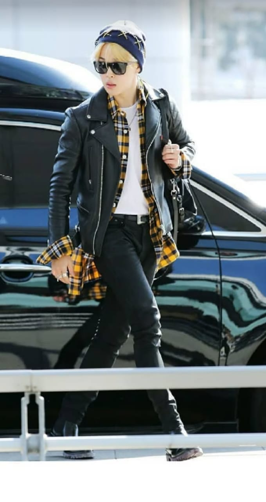
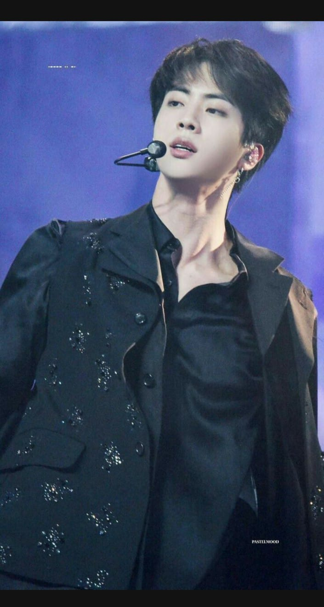
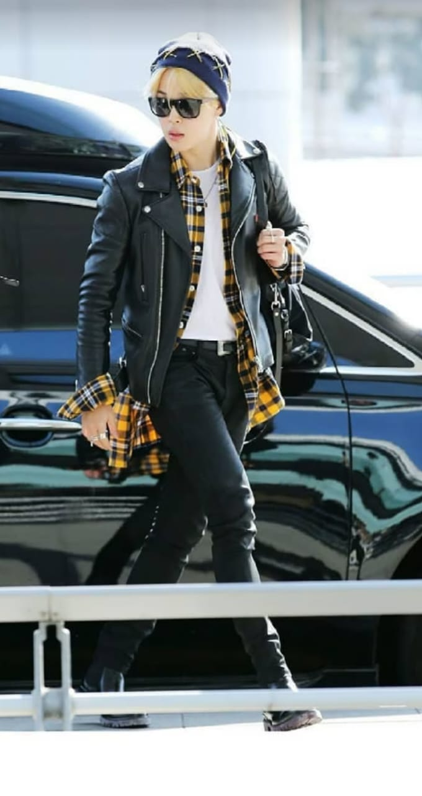
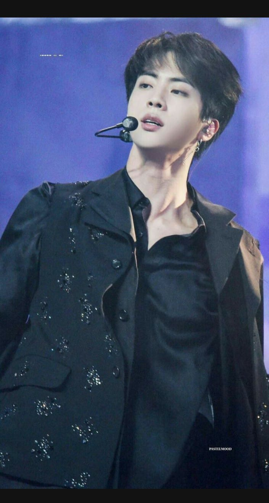

American Music Awards 11
- Variety's Hitmakers 2
- V Chart Awards 2
- V Live Awards 9
- Webby Awards
- WSJ Innovator Awards 1

BTS stands for Bangtan Sonyeondan. It is also known as the Bangtan Boys. It is a seven-member South Korean boy band formed in 2013 in Seoul.
They are the first Korean pop act to receive a Grammy Award nomination, and the first Korean artist to be nominated for a Brit Award. With 30 awards overall, including a record four consecutive wins for Artist of the Year (Asia), BTS are the most-awarded foreign artist in the history of the Japan Gold Disc Awards.
The band consists of Jin, Suga, J-Hope, RM, Jimin, V, and Jungkook, who co-write or co-produce much of their material.
Originally a hip hop group, they expanded their musical style to incorporate a wide range of genres, while their lyrics have focused on subjects including mental health, the troubles of school-age youth and coming of age, loss, the journey towards self-love, individualism, and the consequences of fame and recognition. Their discography and adjacent work has also referenced literature, philosophy and psychology, and includes an alternate universe storyline.
In September 2016, BTS released their second Japanese studio album Youth. The album sold 44,547 copies on the first day of its release, and charted 1st in the Oricon Daily Album Chart.
The album was eventually certified Gold with sales of roughly over 100,000 in Japan. It was followed one month later in October, by their next studio album Wings, which combined the themes of youth presented in their previous "youth trilogy" with temptation and adversity.
Album and its tracks, including the single "Blood Sweat & Tears" immediately rose to the top on eight music charts, including the Gaon Music Chart, and led the iTunes album charts in 23 countries. Wings opened at number 26 on the Billboard 200, with 16,000 album-equivalent units in the US for the week of its release, the best week ever there for a K-pop album, and became the best-selling album in Gaon Album Chart history.
American Music Awards 11

 


